CAMPUS · שבוע 1 · הרצאההצגת מטופל בביקור
דקה וחצי שבהן כל הצוות יודע מה קורה ומה עושים היום
מצגת לדוגמה של Surgery X Academy · תוכן כללי שנכתב להדגמה · המרכז הרפואי אופק (בדוי)

למה זה חשובהביקור זז מהר
- בביקור עוברים על הרבה מטופלים בזמן קצר
- הצגה מסודרת חוסכת זמן ומונעת טעויות
- זו גם הדרך שלכם להראות שאתם חושבים כמו רופאים

המבנהחמישה חלקים, תמיד באותו סדר
- משפט פתיחה: גיל, סיבת האשפוז, היום מהניתוח
- מה השתנה מאתמול ומה המטופל/ת מרגיש/ה
- סימנים חיוניים ובדיקה ממוקדת
- מעבדה ודימות רק מה שחשוב
- הערכה ותוכנית לפי בעיות

משפט הפתיחהמשפט אחד שאומר הכול
בת 58, יום שני אחרי כריתת כיס מרה לפרוסקופית, מרגישה טוב ומתכוננת לשחרור
דוגמה בדויה. מתחילים מהשורה התחתונה ואז מוסיפים פרטים

הערכה ותוכניתמה אתם חושבים ומה עושים היום
- בעיה אחרי בעיה, לא מערכת אחרי מערכת
- לכל בעיה: מה המצב ומה הצעד הבא
- אומרים מה אתם חושבים. מותר לטעות, אסור לא לחשוב

טעויות נפוצותמה לא לעשות
- להקריא את כל התיק
- לדלג על הבדיקה הגופנית
- לסיים בלי הערכה ובלי תוכנית
- להזכיר פרטים מזהים במסדרון

תרגולעכשיו אתם
- בוחרים מטופל/ת מהביקור של הבוקר (בלי שם)
- דקה וחצי להצגה
- משוב מהמתמחה ומהקבוצה
סיכוםשלושה דברים לזכור
- משפט פתיחה אחד שאומר הכול
- תמיד אותו סדר
- מסיימים בתוכנית
Surgery X Academy · מצגת לדוגמה